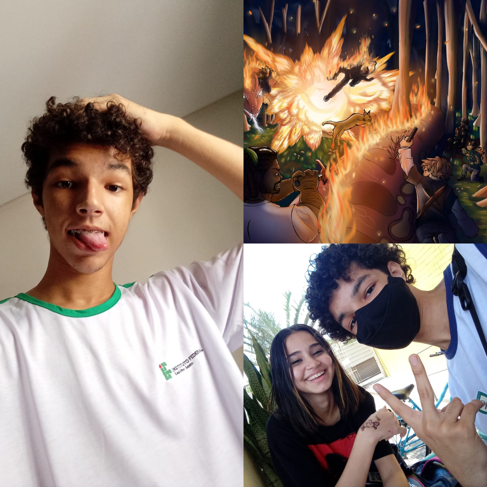

Links para outras páginas:
Tópicos:
Meus Hobbies
LEIA APENAS SE SOUBER O QUE ESTÁ FAZENDO
- Praticar Desenho
- Assistir animações
- Criar Histórias
- À vezes cozinhar
- Jogar jogos com amigos
- Ler
Minha Rotina de Todo Santo Dia:
- Acordo 5:30AM
- Me arrumo
- Tomo Banho
- Arrumo o cabelo
- Visto a roupa
- Às vezes tomo café
- Escovo os Dentes
- Pego minha comida e mochila
- Chego no ponto de ônibus 6:00AM
- No terminal pego outro ônibus
- Chego no IFES na maioria das vezes 6:40AM
- Estudo até 13:00PM
- Pego outros dois ônibus na volta
- Chego em casa na maioria das vezes 14:40PM
- Converso com alguns amigos
- Faço atividades da escola
- Vou dormir por volta de 23:30PM
Imagem que me Inspira

Fotos da minha vida e minha arte
Topo